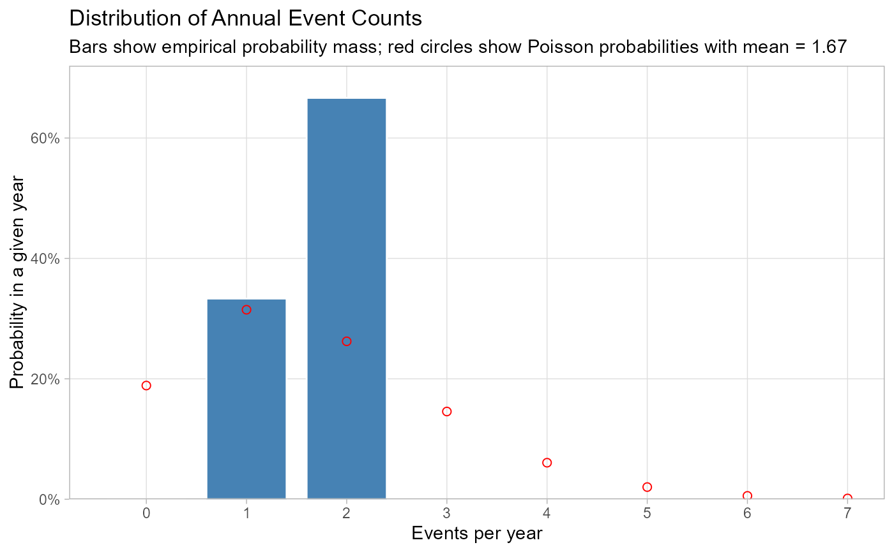

Computes annual totals from daily event flags and plots a histogram of either distinct events or event-days.
Usage
plot_annual_counts(daily, metric = c("events", "days"), show_poisson = TRUE)Details
Annual n_events counts distinct non-NA event_id values per
sim_year; annual n_days counts daily rows with non-NA event_id. A
Poisson expected-count overlay is added only when metric = "events" and
show_poisson = TRUE.
Examples
d <- data.frame(
sim_year = rep(2001:2003, each = 5),
event_id = c(NA, 1, 1, NA, 2, NA, NA, 3, 3, 3, NA, 4, NA, 5, NA)
)
plot_annual_counts(d, metric = "events")
